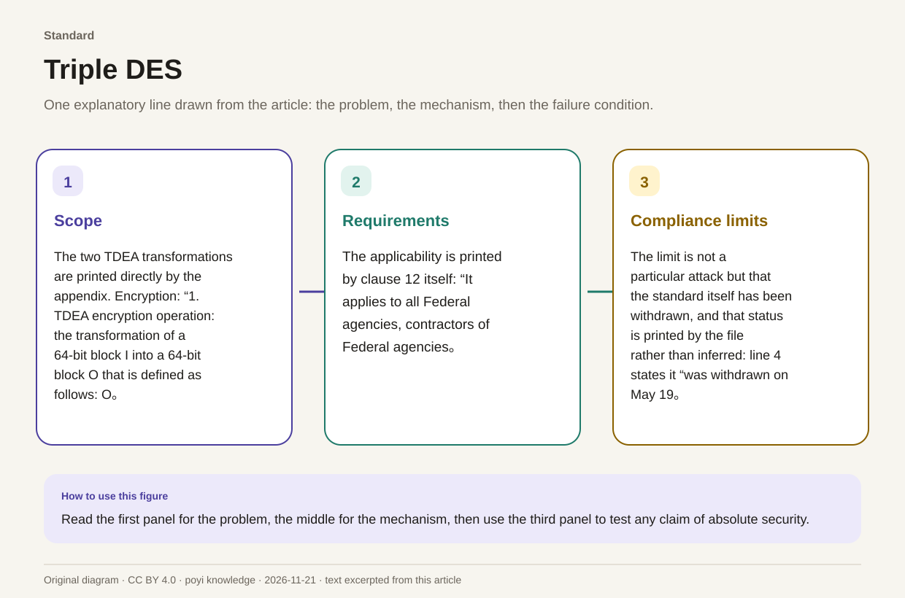
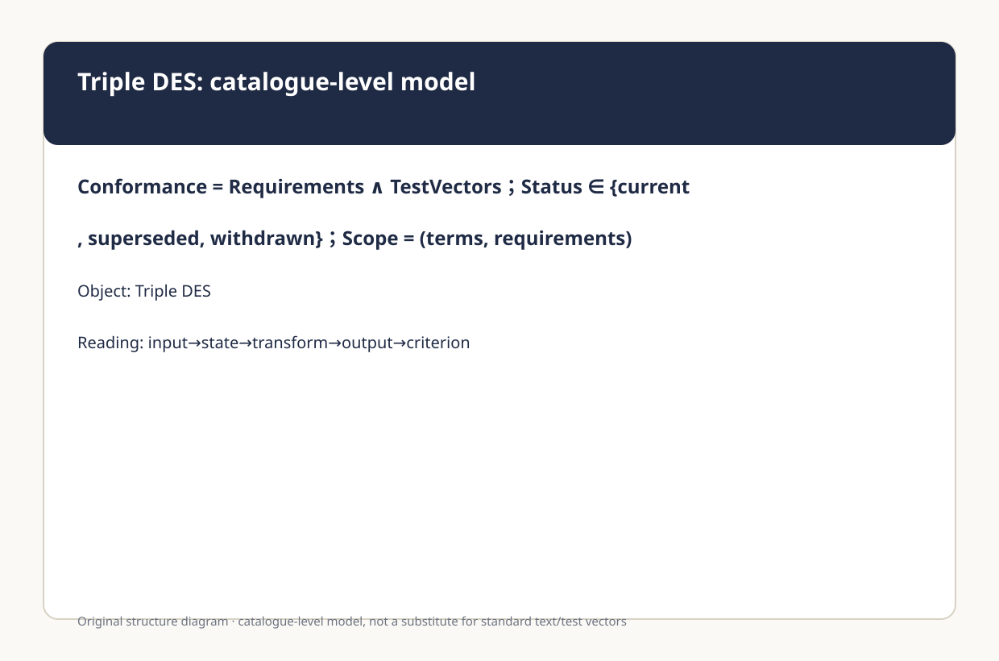

Principles
Standard: Triple DES (三重数据加密标准). The two TDEA transformations are printed directly by the appendix. Encryption: “1. TDEA encryption operation: the transformation of a 64-bit block I into a 64-bit block O that is defined as follows: O = EK3(DK2(EK1(I))).” Decryption: “O = DK1(EK2(DK3(I)))”. The key structure is printed at line 48: “A TDEA key consists of three DES keys, which is also referred to as a key bundle.” The same line states that a single DES key is 64 binary digits of which 56 bits are used directly by the algorithm and the other 8 serve error detection. The formulas are quoted with the extraction's own parentheses and subscripts, not reformatted.

Why it matters
The design choices are printed as three keying options at line 371: “Keying Option 1: K1, K2 and K3 are independent keys”, “Keying Option 2: K1 and K2 are independent keys and K3 = K1”, and “Keying Option 3: K1 = K2 = K3”. The same paragraph gives the backward-compatibility condition, and line 373 prints its consequence: “an encrypted plaintext computed using a TDEA mode of operation can be decrypted correctly by a corresponding single DES mode of operation.” The three options and that compatibility are two sides of one design trade-off; this entry states only the options and conditions the file prints and does not infer strength figures for each option.
Applications
The applicability is printed by clause 12 itself: “It applies to all Federal agencies, contractors of Federal agencies, or other organizations that process information (using a computer or telecommunications system) on behalf of the Federal Government to accomplish a Federal function.” The same clause says each agency may issue internal directives based on its data-security requirement determinations. This row's usage statement is therefore limited to the standard's own stated mandatory audience and is not extended into general commercial deployment advice; concrete TDEA work instances live in the member rows algorithm--3des and algorithm--des.

Limits & attacks
The limit is not a particular attack but that the standard itself has been withdrawn, and that status is printed by the file rather than inferred: line 4 states it “was withdrawn on May 19, 2005 and is provided here only for historical purposes”. The same page immediately gives the onward references: line 6 points to SP 800-131A (transitioning cryptographic algorithms and key lengths) and line 7 to SP 800-67 Rev. 1 (the TDEA block cipher recommendation). This row therefore states explicitly that the standard is withdrawn and serves as a historical document, not as current usage advice; plan V7 forbids guessing current versus withdrawn status, and this quotes the printed sentence.
History
Every dating coordinate is printed by the file. Line 78: “This standard became effective July 1977. It was reaffirmed in 1983, 1988, 1993, and 1999.” The announcement header at line 42 prints “1999 October 25 Announcing the DATA ENCRYPTION STANDARD”. Line 4 gives the endpoint: withdrawal on May 19, 2005. This row therefore states the printed timeline of 1977 effectivity, four reaffirmations, the 1999-10-25 announcement edition and the 2005 withdrawal, and adds no drafting process or competition detail the file does not print.
Worked example & verification
Formal model and reproduction steps
[S=\min_i S_i,\quad S_i\in{\text{密钥强度},\text{分组安全},\text{实现安全}}]
Triple DES: the registered public parameters, key material or randomness, and message are mapped through the stated transformation to an output checked against the registered criterion. The worked example is a structural reproduction, not a new test vector; parameter ranges, standard versions and implementation details remain source-bound.
References
- Wikipedia search entry for 三重数据加密标准. https://zh.wikipedia.org/w/index.php?search=%E4%B8%89%E9%87%8D%E6%95%B0%E6%8D%AE%E5%8A%A0%E5%AF%86%E6%A0%87%E5%87%86
- Handbook of Applied Cryptography (Menezes, van Oorschot, Vanstone). https://www.cacr.math.uwaterloo.ca/hac/
- NIST FIPS 46-3: Data Encryption Standard. https://csrc.nist.gov/pubs/fips/46-3/final